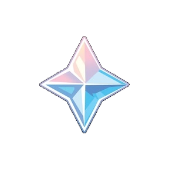

✦ WISH SAVINGS
不屈ノ星詠
星に選ばれぬなら、奪い取れ。
いまの持ち物

目標までの計算結果
目標日までに1日あたり必要な原石
—
目標日を選んでね
今すぐ回せる
0連
目標まであと
180連
不足している原石
28,800
目標の原石換算
28,800
達成率 0%残り180連分
達成予定日を予測
このペースで貯めた場合の予測だよ。実際の入手量とは異なる場合があります。
—
日ごとの増減記録
「いまの持ち物」の数を変更すると、変更前との差をその日の増減として自動記録します。同じ日の変更は合算され、増えた数は＋、減った数は−で表示されます。
記録を消しても現在の所持数は変わりません。過去の所持数記録から引き継いだ日については、前の記録との差を表示します。
天井カウンター
ガチャを引いたら「＋1連」「＋10連」を押してね。原石の所持数は自動では減りません。
★5が出たら該当するボタンを押して0連に戻せるよ。10連の途中で★5が出た場合は、その後に引いた回数を手動で調整してね。
星5のハード天井まで
90連
次の星5
確定状況を確認
キャラクター祈願の星5天井は最大90連、武器祈願は最大80連。実際の確定仕様は祈願の種類やゲーム内の履歴・ルールを確認してね。
データ管理
iPhoneのデータ消去や機種変更に備えて、日ごとの増減記録もJSONファイルで保存できます。
前回の初期化前のデータを保管しています。間違えて消した場合は復元できるよ。
初期化前のデータは、この端末に次の初期化まで保管されます。ブラウザのデータ消去時は復元できないため、バックアップ保存もおすすめです。